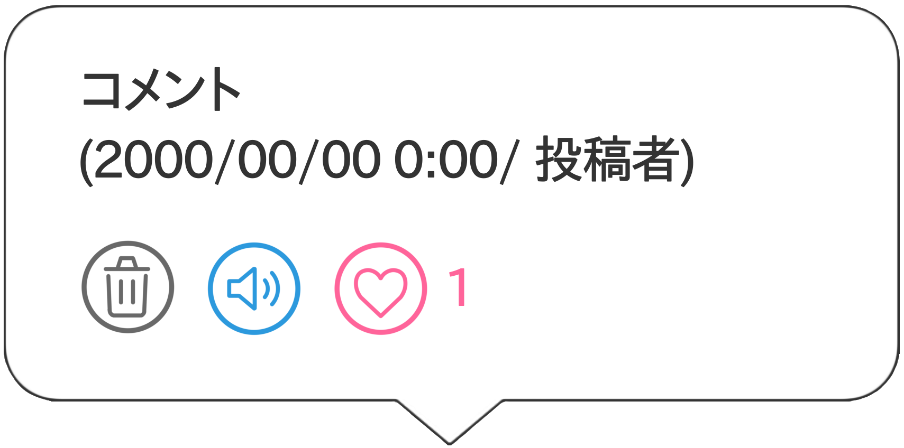

世界中のあらゆる場所の音を共有するためのサイトです。
地図上に音を投稿したり、他の人が投稿した音を聞いたりすることができます。
音を聴く
音のアイコンに近づいていくと音が聴こえてきます。拡大したり、画面の中心に近づけるほど音が大きくなります。
(音が聴こえない場合は、画面上の任意の場所をクリックすると音声の自動再生が始まります)
レイヤーを切り替える
地図のタイルレイヤーを切り替えることができます。
音をアップロードする
音声または動画ファイルを選択し、録音日時、投稿者名、コメントなどを入力し,地図上で投稿場所を指定してください。
(ファイルの大きい動画ファイルなどを選択した場合、変換に時間がかかる場合があります。そのままお待ちください。)
場所を検索する
地名や施設などを検索し、候補から選択するとその場所に移動することができます
音をフィルタリングする
音の投稿された年月日時の音のみを表示することができます。

ここから音声の削除リクエストを送信することができます。
任意の音声だけ音声をオフにし、自動再生を止めることができます。
気に入った投稿に｢いいね｣をすることができます。
著作権を侵害する音楽や音声、不適切な内容の音声のアップロードはご遠慮ください。
また、そのような音声を見つけた場合は、音声アイコン内から送ることができる削除リクエストをご利用ください。
ご質問やご意見がございましたら、以下のメールアドレスまでお気軽にお問い合わせください。
Email:12342012@stdt.tamabi.ac.jp
2026.6.2 新しいタイルレイヤー「Sound only」を追加(1.8.5)
2026.5.29 サイトの概要ページを追加(1.8.0)
2026.5.29 ズーム設定を修正(1.7.1)
2026.5.28 音声のフィルタリング機能を追加(1.7.0)
2026.5.28 アップロード画面などのUIを修正(1.6.2)
2026.5.27 スマホブラウザで閲覧時のUIサイズを調整(1.6.1)
2026.5.27 個別に音声のオンオフを切り替える機能を追加(1.6.0)
2026.5.27 動画ファイルも音声に変換し直接アップロードできる機能を追加(1.5.0)
2026.5.26 投稿に｢いいね｣をする機能を追加(1.4.0)
2026.5.25 不適切な音声やコメントに対して削除依頼を行うことができる機能を追加(1.3.0)
2026.5.25 地図タイルを切り替えるレイヤー機能を追加(1.2.0)
2026.5.25 投稿欄に｢コメント｣｢投稿者名｣の項目を追加(1.1.0)
2026.5.24 リリース(1.0.0)